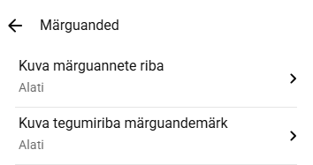
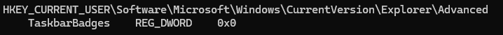

WhatsAppi lugemata sõnumite märk ei ilmunud
Windowsi WhatsAppis olid lugemata sõnumid, kuid tegumiriba ikoon ei näidanud nende märki. Rakenduse Sätted → Märguanded → Kuva tegumiriba märguandemärk väärtus oli kuvatõmmisel Alati. Windowsi Isikupärastamine → Tegumiriba → Tegumiriba käitumised vaates tekitas segadust sõnastus „Peida märgid tegumiriba rakendustes”: päeva piltidel on see nii märgitud kui ka märkimata.
Seadistuse tegeliku väärtuse kontrolliks kasutati Win+R kaudu käsku:
cmd /k reg query "HKCU\Software\Microsoft\Windows\CurrentVersion\Explorer\Advanced" /v TaskbarBadgesVäljund oli TaskbarBadges REG_DWORD 0x0. See on ühe kontrolli tulemus, mitte tõend lõplikult toimivast seadistusest.


- Vestlus märgiti käsitsi lugemata ja WhatsApp minimeeriti. Kasutaja vastas: „ei ilmu”.
- WhatsApp käivitati täielikult uuesti. Tulemus: „ei ilmu”.
- Windows Explorer taaskäivitati. Tulemus: „sama”.
- Prooviti WhatsAppi parandamist. Tulemus: „sama”.
Taaskäivituste ja parandamise täpsed nupud või käsud pole kättesaadavas algallikas kinnitatud. Pärast muudatusi ei saabunud minimeeritud rakendusse päriselt uut sõnumit, seega jäi just selle katse tulemus kontrollimata.
Seis: lahendamata. Käsitsi lugemata märkimine ei taastanud märki. Püsivat parandust ega toimivat ajutist asendust ei kinnitatud.